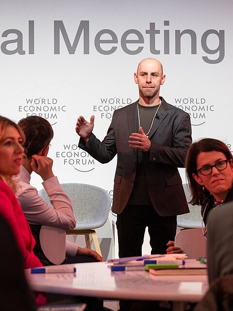

性格心理学 × 科学論
5週間後に再テストすると、約半数が別のタイプに分類される。スコアは二峰分布ではなく正規分布を示す。それでも世界の何億人もが、4文字のラベルに自分を重ねている。分類されたい衝動と、その科学的限界の話。
Educational Testing Service から初の公式 MBTI マニュアルが出版された年。イザベル・マイヤーズ母娘の 20 年にわたる独学の研究が、ようやく「世に出る道具」になった。
同年、ジョン・グレンが米国人初の地球周回飛行を成功させ、10 月にはキューバ危機で世界が核戦争の縁に立った年。
MBTI:Myers–Briggs Type Indicator の略。ユングの類型論を土台に、イザベル・ブリッグス・マイヤーズとその母キャサリンが設計した 4 軸 16 タイプの性格指標。
診断結果の画面に「INFJ」と表示された瞬間、私は少しだけ背筋が伸びた気がした。「希少な 1%」「深い洞察力」「理想主義者」。知らない誰かが私のことを言い当てている、と感じた。
この感覚は私だけのものではない。SNS のプロフィール欄、マッチングアプリの自己紹介、就職面接の雑談。4 つのアルファベットは、もはや名前や出身地と同じ高さで語られている。
ところが性格心理学者の大半は、MBTI を科学としては認めていない。なぜか。
人は自分を分類されたい生きものだ。この記事では、最も人気のある分類道具・MBTI が、なぜ科学者から厳しく扱われるのかを、自分自身のスコアで体験しながら確かめる。
1917 年、アメリカ・ミシガン州の静かな書斎で、ひとりの女性が書き物机に向かっていた。キャサリン・クック・ブリッグス。農学の学位を持つ、小説家志望の主婦である。彼女が書こうとしていたのは、娘の婚約者の人格描写だった。結婚を控えた娘のために、「人の性格をどうやって描けば本物に見えるか」という問いが、彼女の頭から離れなかった。そこへ、第一次大戦後の欧州から翻訳書が一冊届く。カール・ユングカール・ユング (1875–1961)
スイスの精神科医。フロイトの共同研究者だったが理論的に袂を分かち、集合的無意識・元型・内向/外向などの概念を提唱した。宗教学・神話学にも深く踏み込んだ。『心理学的類型論』。外向と内向、思考と感情、感覚と直観。人の気質を軸の組み合わせで記述できる、という発想に、キャサリンは衝撃を受けた。書きかけの小説は、そこで止まった。
20 年後、大学を政治学で卒業した娘イザベルが、母の研究を引き継いだ。1943 年、イザベルは 172 問の質問紙「Form A」を完成させる。専門の心理学教育も統計訓練も受けていない母娘が、独学で作った道具だった。そして 1962 年、Educational Testing Service が初の公式マニュアルを出版する。MBTI が「誰でも使える道具」として世に出た瞬間である。
Isabel Briggs Myers
1897–1980 / MBTI 設計者 / Wikipedia
スワースモア大学で政治学を専攻。心理学の正式な学位を持たないまま、母キャサリンから受け継いだユング型論の研究を独学で継続した。1928 年には推理小説コンテストで 7,500 ドルの賞金を獲得するほどの筆力を持つ作家でもあった。世界で最も多く受けられている性格診断は、推理小説家の手から生まれている。
Photo: Public Domain / Wikimedia Commons
4 つの二分軸の組み合わせで 16 タイプが生まれる。行は気質(N × T/F、S × J/P の 4 グループ)、列は I/E と J/P の組み合わせ。構造自体は美しく、整っている。問題はこのあとに出てくる。
よくある誤解
「MBTI は心理学で広く使われているから、科学的に認められた診断なのだろう」
実際は
企業研修や自己啓発本では広く使われるが、査読付きの性格心理学研究ではほぼ採用されない。学術論文で標準的に使われるのは Big Five(ビッグファイブ)である。
よくある誤解
「タイプがあるということは、性格は 16 通りにはっきり分かれるということだ」
実際は
各軸のスコアは山が 2 つの二峰分布ではなく、中央に山が 1 つの正規分布を示す。大半の人はどちらの極でもなく「真ん中付近」に位置する。
よくある誤解
「自分の MBTI タイプは変わらない。核のような性質だから」
実際は
数週間後に同じテストを受けると、4 文字のうち 1 文字以上が変わる人が 3 割以上いる。軸のひとつを 5 週間後にもう一度測ると、約半数が別のタイプに分類されるという報告もある。
McCrae & Costa (1989) ほかの報告では、MBTI の 4 軸すべてで実際のスコア分布は右図に近い。「I と E のあいだ」が最も人の多い場所なのに、そこに線を引いて二つに分けている。
"The MBTI is astrology for nerds. Personality types are a myth, traits are on a continuum."
「MBTI は理系のための占星術だ。性格タイプは神話で、特性は連続体の上にある。」
— Adam Grant, ウォートン校組織心理学教授, 2018
ここまでの話を、自分の数字で確かめてみる。外向/内向(E/I)を測る簡易スケールを、少し違う言い回しで二度受けてもらう。ルールはこれだけだ。質問は一回目と二回目で同じ内容を、違う文脈から聞いている。本物の MBTI でも、質問表現が違うだけで「同じ軸」を何度も測っている。
本来の MBTI はもっと多くの質問と 4 軸を使うが、ここでは再テスト不安定性の肌触りを掴むための縮小版だと思ってほしい。選んだ答えの中央(「どちらとも言えない」)にあなたのスコアが近ければ近いほど、次に同じテストを受けたときにタイプが変わる確率が上がる。それが、科学者が MBTI に冷淡な最大の理由である。
この体験は、2 回続けて受けたときにだけ意味を持つ。1 回目の結果だけを見て閉じてしまうと、ただのミニ性格診断になる。1 回目と 2 回目のあいだに起きる「ズレ」こそが、この仕掛けの本体である。用紙は必ず 2 枚続けて受けてほしい。
以下 5 項目について、今この瞬間の実感にもっとも近い欄に ✗ を付けること。質問は全 5 件、回答の中断・訂正は可。
質問の文面は異なるが、測定している特性は同じ。一回目の回答を思い出そうとせず、いまの実感で答えること。
—
—
SESSION 01
—
—
SESSION 02
—
—
Howes & Carskadon (1979) は 117 名の大学生を 5 週間後に再テストし、同じ 4 文字タイプのまま残ったのは 49% だったと報告した。
Pittenger (1993) は複数研究をレビューして「再テスト間隔が短くても、最大で半数が別のタイプに分類される」と結論した。最新の公式テスト Form M でも、4 週間後に同じ 4 文字のまま残るのは 65% ― 裏を返せば 35% は別タイプになる。
カットラインの近くに立っている人ほど、このぐらつきの影響を強く受ける。たった今あなたが体験したのは、その縮小版である。
ひとつの批判だけなら、MBTI は生き残れただろう。問題は、性格測定のほぼすべての軸で、科学的基準から外れる点が重なっていることだ。信頼性、妥当性、理論の検証可能性、そしてより妥当な比較対象の存在。順に畳んでいく。
まず、比較対象の話から。MBTI を科学の土俵に引きずり出したのは、Big FiveBig Five(ビッグファイブ)
性格を 5 つの連続した因子(開放性・誠実性・外向性・協調性・神経症傾向)で記述するモデル。現在の性格心理学の標準的枠組み。と呼ばれるまったく別系統の性格モデルだった。1930 年代、Gordon Allport と Henry Odbert は英語辞書から性格を表す語を約 4,500 語抜き出した。「人間が性格を表現する語彙には、性格の重要な次元がすべて刻印されているはずだ」という、後に語彙仮説と呼ばれる発想である。この語彙を数十年かけて、Raymond Cattell、Lewis Goldberg、そして Paul Costa と Robert McCrae が因子分析にかけ続けた結果、どの言語・どの文化で試しても、性格語は必ず 5 つの束に収束した。Big Five の 5 因子は、ユングの思索からではなく、人間の言葉そのものから浮かび上がってきた。
Big Five が MBTI と根本的に違う点は三つある。第一に、モデルの出所が逆向きだ。MBTI はユングの類型論という理論から演繹された。Big Five は数十万人分のデータから帰納された。第二に、スコアの扱い方が違う。MBTI は中央値でばっさり二分して「E か I か」を決める。Big Five は各因子を連続したスペクトラムのまま扱い、「外向性スコア 62 パーセンタイル」のように相対位置で語る。二峰分布(山が二つ)ではなく正規分布(山が一つ)で性格が分布するという事実に、素直に沿っている。第三に、含まれる軸のセットが違う。MBTI の 4 軸は Big Five の 4 因子とそれぞれ強く相関する(E/I と外向性、S/N と開放性、T/F と協調性、J/P と誠実性)。ところが、Big Five で職務パフォーマンス・精神的健康・寿命との相関が最も強いとされる 5 番目の因子 ―― 神経症傾向(Neuroticism) ―― に対応する軸が、MBTI には存在しない。不安の感じやすさ、ストレスへの耐性、気分の上下。「性格を語るなら外せない」とされる情動安定性の次元が、MBTI の地図からは丸ごと抜けている。
学術誌で性格について書くとき、ほぼ例外なく使われるのは Big Five のほうだ。MBTI が学術論文で使われるのは、「MBTI の問題点を論じる論文」のときくらいしかない。両者の骨格を並べてみる。
ユングの類型論から演繹(1940s–)
測定: 二分法(中央で強制的に二分)
▲ 神経症傾向に対応する軸が無い
語彙 × データから帰納(1930s–)
測定: 連続スペクトラム(分位で表現)
▲ 職務・健康・寿命の予測力あり
MBTI の 4 軸は、それぞれ Big Five の 4 因子と強く相関する。ただし、Big Five で最重要視される 神経症傾向(N) に対応する軸が MBTI には無い。「胴体と腕の片方を診ないで受けた健康診断」と評される理由がここにある。
Howes & Carskadon (1979) の追跡研究では、117 名の大学生のうち、5 週間後の再テストで同じ 4 文字タイプを維持したのは 49% だった。Pittenger (1993) はこの結果を複数の追跡研究と合わせて検証し、再テスト間隔が短くても最大で半数が別タイプに振り分けられると結論した。
新版 Form M でも 4 週間後に 4 文字が同じままなのは 65%。気質が本当に「核」であるなら、数週間でここまで揺れないはずだ。
MBTI の前提は「人は E か I、S か N のどちらかに属する」だ。これが正しければ、スコアの山は両極に 2 つ現れるはず(二峰分布)。ところが McCrae & Costa (1989) 以降の測定結果は、4 軸のすべてで山がひとつの正規分布を示す。
つまり、人口の大半は「真ん中」に集まっていて、MBTI はその真ん中に引いた一本のカットラインによって、隣どうしの人を反対側のタイプに分類している。これが 1 の不安定性の直接の原因でもある。
1991 年、米国科学アカデミー(NAS)は MBTI について "The popularity of this instrument in the absence of proven scientific worth is troublesome."(科学的価値の証明がないままの人気は厄介である)と総括し、キャリアカウンセリングへの使用を推奨しないと結論した。
MBTI 自身の公式マニュアルにも「採用選考に使うべきでない」と書かれている。にもかかわらず、Fortune 100 企業の 約 88% が過去に何らかの形で使用している ― この非対称が、批判の火種を尽きなくさせている。
Big Five で最も強い予測力を持つのは、じつは外向性ではなく「神経症傾向(Neuroticism)」だ。不安の感じやすさ、ストレスへの反応、気分の安定性。職務満足、人間関係、メンタルヘルスと最もよく相関する軸がこれである。
Adam Grant は 2013 年の批判記事で、この欠落を "It's like a physical exam that ignores your torso and one of your arms."(胴体と腕の片方を診ない健康診断のようなものだ)と評した。
ここまで読むと、ひとつ素朴な疑問が残る。では、なぜ多くの人が「自分のタイプに当てはまる」と感じるのか。答えのかなりの部分は、すでに別の記事で扱っている。一般的で肯定的な記述を、自分だけに向けられた言葉だと感じてしまう。同じ文章を全員に渡しても、平均で 4.26 / 5.0 点の「的中度」を得られる。バーナム効果という現象だ。MBTI のタイプ記述は、そのバーナム効果が最大限に効く密度と口調で書かれている。
"Most personality psychologists regard the MBTI as little more than an elaborate Chinese fortune cookie."
「大半の性格心理学者は、MBTI を精巧な中華フォーチュンクッキー程度のものとしか見ていない。」
— Robert Hogan, 性格心理学者

Adam Grant
ペンシルベニア大学ウォートン校 / 組織心理学者 / Wikipedia
現代で最も声の大きい MBTI 批判者のひとり。2013 年に Psychology Today に掲載した「MBTI, I'm breaking up with you」は、学術界と一般読者の両方に届いた稀有な批判記事になった。科学への忠実さと読みやすさを同じ文章に両立させる書き手である。
Photo: Michael Calabro / World Economic Forum (CC BY 2.0) · via Wikimedia Commons
1921
ユング『心理学的類型論』出版
外向・内向、思考・感情、感覚・直観という軸が初めて体系化される。MBTI の土台となる発想だが、ユング本人は「人を 16 の箱に入れる」とは書いていない。
1943
イザベル・マイヤーズが Form A を完成
172 問の質問紙。第二次大戦中、女性の職場適性を見る道具として普及しはじめる。心理学の専門家チームではなく、母娘の独学プロジェクトとして。
1962
ETS から初の公式マニュアル出版
MBTI が「誰でも使える測定道具」として世に出た年。同年、世界はキューバ危機で核戦争の縁に立ち、ジョン・グレンが地球を三周した。
1975
CPP が出版権を取得し、商業化が加速
Consulting Psychologists Press(のちの Myers-Briggs Company)が権利を取得。企業研修・自己啓発市場に乗り、80 年代以降フォーチュン 500 の多くが採用する。
1991
米国科学アカデミー(NAS)が批判的結論を発表
報告書『In the Mind's Eye』で「科学的価値の証明がないままの人気は厄介」と結論。キャリアカウンセリングへの使用を推奨しないと明記した。
1993
Pittenger の批判論文
「MBTI を測定した結果、基準に届かなかった」というタイトルの論文が、学術批判の標準的な引用文献になる。
2013
Adam Grant の Psychology Today 記事
「MBTI, I'm breaking up with you」。学術的批判が初めて、一般読者に大規模に届いた瞬間。
2020 年代
韓国と日本での再流行
コロナ禍の隔離と就活難の中、韓国では 19〜28 歳の 9 割が受験済みに。マッチングアプリのプロフィールの約 1/3 に 4 文字が記される。日本では 7-Eleven が「MyBTI グミ」を発売、血液型性格分類から 16 タイプへ関心が移る。科学的批判は最も強まり、同時に、最も多くの人が受けている。
ここまでの話を、あえて MBTI に不利な言葉ばかりで並べてきた。けれど、この記事の目的は「MBTI をやめさせること」ではない。性格心理学者がなぜ冷淡であり続けるのか、その理由を具体的に知っておくことのほうが、おそらく実用的だ。知ったうえでなお楽しむことは、十分に両立する。仕組みを知ったマジシャンが、マジックを嫌いにならないのと同じ理由で。
興味深いのは、2020 年代のこの状況のほうだ。米国科学アカデミーの警告(1991)、Pittenger のメタ分析(1993)、Adam Grant の公開批判(2013)と、性格心理学の側からの否定はすでに 30 年分積み重なっている。それが学術誌の外にまで届いた直後に、コロナ禍を挟んで、韓国・日本・中国のあいだでかつてない流行が起きた。批判が最も強い時期と、普及が最も進んだ時期が重なっている。分類されたい衝動は、根拠の強弱とは別の層で動いている。それは「自分をひとつの物語にまとめたい」という、自己が作られていく途中でしか生まれない欲求なのかもしれない。
MBTI は性格を測っているのではなく、分類されたいという衝動を受け止める容器として機能している。
— 本記事のまとめとして
— 文化の中の MBTI
韓国の MBTI ブーム (2020 年代)
コロナ禍で対面の交流が減るなか、「MZ 世代」(ミレニアル + Z 世代)のあいだで爆発的に広がった。19〜28 歳の約 9 割が受検済みで、ソウルのマッチングアプリでは全プロフィールの 1/3 に MBTI が記される。好まれる/避けられるタイプを明示する「MBTI フィルター」機能も登場した。
日本: 血液型から 16 タイプへ
日本にはもともと、1970 年代から続く血液型性格分類の文化がある。2020 年代に入り、その役割を MBTI が部分的に引き継いだ。7-Eleven は「MyBTI グミ」として 16 種のキャンディを発売、自分のタイプを集めるためには最低でも 4 袋買う必要がある ― 消費と同化した分類。
Fortune 100 の 88% という数字
米国フォーチュン 100 企業の約 88% が過去に MBTI を何らかの形で使用したとされる(出版元 The Myers-Briggs Company による自社発表)。世界の年間受検者数は推定 200 万人超、公式テスト 1 回 49.95 ドル。科学的評価と商業的浸透が、ここまで食い違う人文系の道具は稀である。
Measuring the MBTI...And Coming Up Short
MBTI の信頼性・妥当性を網羅的に検討した古典的批判論文。基本的な心理測定の基準を満たさないと結論づけ、以降の学術批判の基準点になった。
MBTI の 4 軸が Big Five の 4 因子に対応することを示し、同時に「神経症傾向」に対応する次元が MBTI にないことを指摘した重要な比較研究。
In the Mind's Eye: Enhancing Human Performance
米国科学アカデミーが MBTI を含む人材評価道具を検証した報告書。「科学的価値の証明がないままの人気は厄介である」と結論し、キャリアカウンセリングへの使用を推奨しないと明記した。
A Five-Week Test-Retest Reliability Study of the Myers-Briggs Type Indicator
5 週間後の再テストで同じ 4 文字タイプを維持したのは 49% だったと報告。「MBTI の再テスト不安定性」の最も広く引用されるデータ源。
MBTI 理論を「既知の事実・データとの一致を欠き、検証可能性を欠き、内部矛盾を持つ」と体系的に論じた論文。教育現場で批判的思考を教える題材としての使い方も示す。
Goodbye to MBTI, the Fad That Won't Die
学術的批判を一般読者の言葉に翻訳した代表的な記事。「理系のための占星術」「胴体と腕を診ない健康診断」といった表現で、MBTI の問題を広く届けた。
.jpg){kind=link}